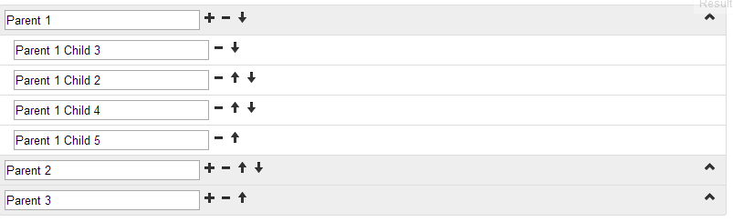

jQuery / Twitter Bootstrap List Tree Plugin Editable version - 20 April, 2013
JQuery / Twitter Bootstrap List Tree Plugin is a great plugin, but it does not allow to edit and sort tree elements. I have created an editable version of plugin: The view of tree:

You can find the source code there or here.
Also see it below.